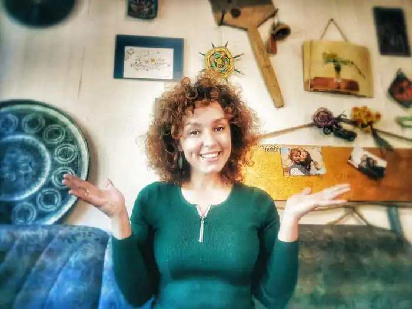

Валентина Захабура (справжнє ім'я Валентина Захарченко-Бурцева). Народилася 16 липня 1978 в м.Київ. Українська письменниця (поетеса, прозаїк), авторка і виконавиця пісень, бібліотекар, педагог, організатор літературних студій для дітей та юнацтва.
Закінчила філософський факультет КНУ ім. Тараса Шевченка, працює бібліотекарем у книгозбірні для дітей. Учасниця літоб'єднання "Перехрестя", виступає з віршами й піснями на фестивалях і концертах, твори друкуються в українських та міжнародних часописах ("Дніпро", "Київська Русь", "Zeitglas", тощо). Має добірку віршів у міжнародному збірнику "Ukr.Ru. etc.", "Перша тисяча кроків", "Викрадення Європи", "Голоси Севами" та власну збірку поезій "ЯТОМОРЕ", збірку пісень "Запрошення на каву", твори ввійшли до "Антології сучасної української поезії" болгарською мовою (за редакцією Анни Багряної).
Організовує та проводить літературні студії для дітей і юнацтва. У видавництві "Теза" вийшли друком повісті для дітей та батьків "Ой, Лише, або з чим їдять вундеркіндів?", "Ой, Лише, або як потрапити в халепу?", "Ой, Лише, або як приборкати батьків?". Брала участь у літературних проектах для дітей та підлітків "Це зробила вона", "Чат для дівчат", "Окуляри та кролик-гном". Валентина Захабура має чудовий голос, прекрасно грає на гітарі, є постійною учасницею фестивалів авторської пісні і поезії "Відкриті Небеса", "Рутенія", "Sevama fest", фестивалів Трипільське коло", проектів "Міцна Поезія", авторського клубу поезії "Гітара по колу" тощо. Твори Валентини Захабури є у фондах публічних бібліотек Києва. Книги: